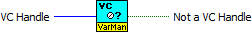

.png) |
VC Handle is a handle of local context to validate. |
 |
Not a VC Handle returns TRUE if VC Handle is not valid handle of a variable context. |
Owning Palette: Advanced VarMan VIs
Validates the handle of a Variable Context.
 |
Click the parameters for more information |